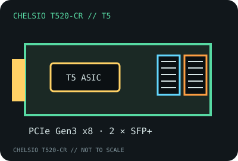

[ MODEL-SPECIFIC NETWORK HARDWARE RECORD ]
Chelsio T520-CR Dual-Port 10GbE Unified Wire Adapter
Dual SFP+ PCIe card based on Chelsio’s T5 generation adapter architecture. Optical transceivers and DACs are selected separately and must be supported by the card and link partner.

IDENTIFICATION: Exact Chelsio model T520-CR, dual-port CR low-profile card variant. The product designation, not just the shared T5 ASIC, is required for selecting firmware, bracket and optics.
Exact SKU, interface and compatibility
| Exact model / SKU / revision | Chelsio T520-CR (CR dual-port adapter). Chelsio identifies the card by model; record the board revision and any OEM label on the specimen. |
|---|---|
| Controller | Chelsio T5-generation Unified Wire ASIC with onboard protocol-offload engine. |
| Bus, ports and connectors | PCI Express 3.0 x8; two SFP+ cages. LC connectors are on compatible optical transceivers; DAC cables plug into the SFP+ cages directly. |
| Per-port link rates | 10GbE SFP+ operation; 1GbE is possible only with a supported module and driver combination. The CR datasheet’s named optical interfaces are 10GBASE-SR/LR; module capabilities must be checked individually. |
| Driver and operating systems | Chelsio Unified Wire provides T5 drivers for supported Linux (cxgb4), Windows, FreeBSD and hypervisor releases. Use the current T520-CR support matrix and driver package; do not infer current OS support from a legacy product brief. |
| Compatibility caveats | Requires an electrically x8 PCIe connection for full interface bandwidth. SFP+ optics, DAC coding, fiber type and peer support constrain link-up. Offload, SR-IOV, iSCSI, FCoE and RDMA features depend on driver, license/stack, OS and configuration. |
| Variant warning | T520-CR is distinct from T520-SO and other T5 port/connector variants. Use only the correct card-specific support files and supported transceivers. |
Measurement notes
The two port link rates are independent physical link settings. Report each port’s negotiated speed, optics/DAC identifiers, peer, firmware, driver and PCIe link width/speed; do not describe the sum of link rates as measured throughput.
Chelsio product brief and manufacturer documentation
- Chelsio T520-CR product specificationsManufacturer card model, port, optics and architecture information.
- Chelsio T520-CR Product Brief (PDF)Manufacturer product-family brief linked from the exact model page.
- Chelsio support and driver documentationManufacturer source for current Unified Wire drivers and installation guidance.